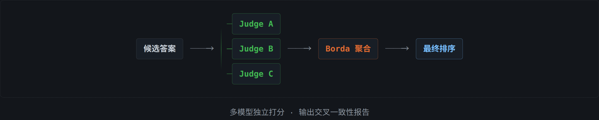
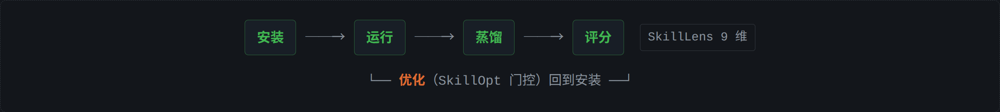
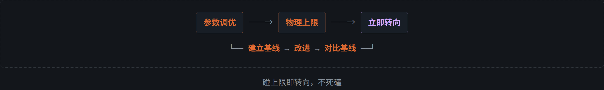

CallMeHFK · UTC+8
系统思考者 —— 站在技术与业务的交界处
用数据与事实做决策，不用感觉。先盘点再行动，确认了快速推进。
质量是底线，效率是目标。
图解
Diagram多智能体共识排序

Agent Skill 生态闭环

决策边界

项目与成果
自建 · 适配自建
| 项目 | 做了什么 | 事实 |
|---|---|---|
| qwenpaw-consensus-rank | 多评审 LLM 共识排序插件 | 多模型独立打分 → Borda 聚合，输出交叉一致性报告；QwenPaw 原生插件 |
| skill-recorder | 桌面端工作流录制工具 | 录制 → 意图 + 有序步骤 → 可复用 Skill 或自动化 |
| game-input-mcp | 游戏输入自动化 MCP Server | 鼠标/键盘控制的 MCP 工具集（stdio 传输），含屏幕截图、精确按压时长、可编排序列；面向游戏场景的低延迟输入注入 |
| Audio Driver | Windows APO 音频驱动 | 基于 WDK CBaseAudioProcessingObject + ATL 的 capture APO：AEC 双级链（16k 回声消除 → 因果流式降噪），CPU 用户态运行（~0.5% 单核）、无需 DSP/NPU |
| ScheduleCopilot | 多智能体排期风险识别系统 | 基于 AgentScope Agent Service + Agent Team 构建：Leader 编排 6 类 Worker 完成风险识别、知识检索、方案补全与优化、报告生成与反馈分析；配 10 个领域 Skill，另有长期记忆中间件、双通道日志与多租户隔离 |
| ATPO | 自适应树策略优化 | 多轮对话场景下的策略搜索与冷启动 |
适配与贡献
| 项目 | 做了什么 | 事实 |
|---|---|---|
| sepia | QwenPaw 插件适配 | 将 Agent Skill 兼容的去 AI 味写作技能包适配为 QwenPaw 原生插件（issue #244 → PR）；基于 StoryScope（arXiv:2604.03136）叙事结构检测 |
| text-to-cad | CAD/CAE/CAM Skill 库接入 | 将 STEP / STL / 3MF / URDF / SDF / SRDF 六种产物格式的 Agent Skill 库接入本地生态 |
| Agent Skill 工程化 | 技能蒸馏与质量门控 | 182 个已安装 Skill；SkillLens 9 维评分 + SkillOpt 门控优化闭环 |
能力画像
能力 × 证据多智能体系统
AgentScope / QwenPaw 多端派发，Agent Team 编排（Leader + 多 Worker），MCP 协议接入，技能路由与共识
Agent Skill 工程
技能安装、蒸馏、评分（SkillLens 9 维）、门控优化全链路；从零设计可复用的领域 Skill
插件与工具开发
QwenPaw 原生插件开发与适配（共识排序、sepia 去 AI 味）；MCP Server 工程化（游戏输入控制）
Windows 音频驱动
APO 驱动全流程：官方 COM 契约 → 构建签名 → 测试机部署 → 验收交付；AEC + 流式降噪链路
算法与数据
自适应树策略优化（ATPO），数据驱动的参数与方案选型
嵌入式与固件
周期精确仿真验证，性能结论落到指令级证据
工业软件
TPM 数字员工平台部署，TDMS 缺陷提取流水线
技术栈
Badges运行原则
principles.txt[0]先盘点，再行动建立基线 → 改进 → 对比基线，不盲目启动
[1]数据驱动不迷信源码 > 配置 > 运行态；禁止口算，工具算完再输出
[2]逐字保真源数据神圣不可改；可加标注，禁止「优化」改写
[3]物理极限即边界参数调优空间可迭代，碰物理上限立即转向，不死磕
[4]诚实纠错新数据推翻旧结论 → 明确记录「上一轮我说 X 是错误的」
[5]工具链即基础设施按任务安装不膨胀；必须有退路，否则不上
当前
in-progress- 多智能体工具链 — QwenPaw 多端派发、Agent Team 编排、技能蒸馏、共识排序
- 开源 — sepia 去 AI 味写作技能包（QwenPaw 插件适配推进中）· qwenpaw-consensus-rank 多评审共识排序 · game-input-mcp 游戏输入自动化
- 系统级开发 — Windows APO 音频驱动（AEC + 流式降噪），CPU 用户态实时运行
- 嵌入式与固件 — 周期精确仿真验证，性能结论落到指令级证据
「写得进去的部分，已经足够强大。」—— 但做不出来，比说不清楚更致命。